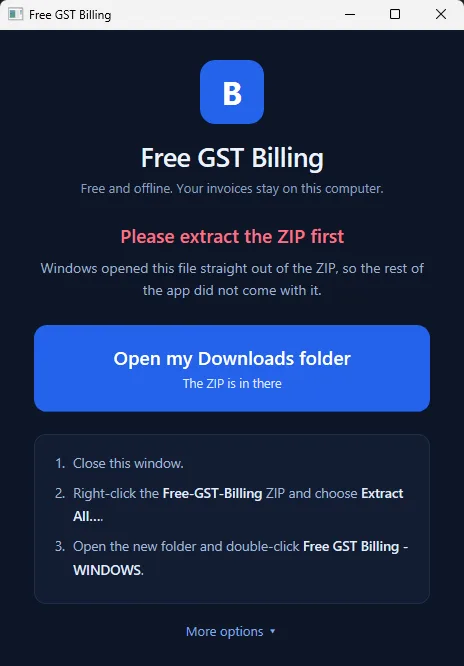
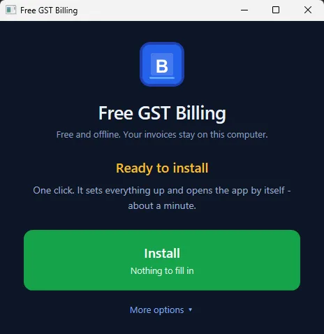
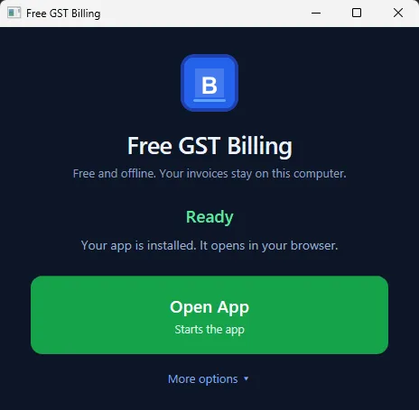

Install on Windows, step by step
Paste one line and press Enter. About 3 minutes, no technical knowledge needed, no administrator password, and no "Windows protected your PC" warning. Every step below says what to press and what you will see.
Windows (most PCs and laptops): Install on Windows. Mac (Apple logo top left): Install on a Mac. Linux or a NAS: Install on Linux or a NAS. Already installed? Updating. Wondering whether it is safe? Is it safe? Security and privacy.
#Before you start
- Windows 10 or Windows 11. To check: press Windows + R, type
winver, press Enter. - Internet for the install only (it downloads about 25 MB). After that the app works offline.
- About 600 MB of free space.
#Install with one line
- Copy this lineClick the Copy button at the right end of the line below. (Or select all of it with the mouse and press Ctrl + C.)
powershell -ExecutionPolicy Bypass -c "[Net.ServicePointManager]::SecurityProtocol='Tls12'; irm https://billing.reazix.com/install.ps1 | iex" - Press Windows + RHold the Windows key (the one with the Windows logo) and press R. A small Run box opens at the bottom left.
- Paste and press EnterClick in the box, press Ctrl + V, then press Enter.
- Watch it workA blue or black window shows four steps, each ending in OK:
It may also fetch Node.js, the engine the app runs on (about 30 MB, kept inside the app folder).[1/4] Checking this computer ... OK [2/4] Downloading (25 MB) ... [3/4] Installing ... OK [4/4] Adding icons ... OK - Answer one questionIt asks Open Reazix Billing by itself when this computer starts? Type
Yand press Enter for yes, or just press Enter for no. - The app opens in its own windowThe window says Done! Opening Reazix Billing... and the app appears, with no browser tabs or address bar. A short welcome asks for your business details; see The first-run setup. The install window closes by itself.
Every day after that: click the Reazix Billing icon on your Desktop or in the Start menu.
To update or repair it: do the same three steps again. It finds your install, backs up your data to Documents\Reazix Billing Backups, and replaces only the app's own files. Your invoices, clients and settings stay exactly as they are.
The line under it says what to do (no internet, the disk is full, the folder cannot be written to). Do that, then paste the same line again; it carries on where it stopped. Nothing in your data is changed by a failed install.
The app is installed to %LOCALAPPDATA%\Programs\Reazix Billing. If you installed it from the ZIP before, the line finds that copy (through its Desktop shortcut) and updates it where it is. Your data is in the _system\data folder inside it.
#Other way: download the ZIP
For offices that copy the app from a USB stick, or where the line above is blocked. It takes a few more clicks and Windows shows a warning the first time.
#Step 1: Download
- Click this buttonDownload Reazix Billing
- Wait for the download to finishYour browser shows it at the top right (Chrome and Edge) or bottom left. The file is called
Reazix-Billing.zip. - Open your Downloads folderClick the folder icon next to the download, or open File Explorer (the yellow folder on the taskbar) and click Downloads on the left.
#Step 2: Unzip (extract) it
A ZIP is a packed folder. Windows can open it, but the app cannot run from inside it, so it has to be unpacked first.
- Right-click the ZIPRight-click
Reazix-Billing.zipand choose Extract All…. (On Windows 11 it may be under Show more options.) - Choose whereClick Browse… and pick Documents, or a drive like
D:\. Not Downloads: things there get deleted when people tidy up. Do not chooseC:\Program Files. - Click ExtractA new folder called Reazix-Billing opens. Inside you see Reazix Billing - WINDOWS, READ ME FIRST, and launchers for Mac and Linux.
If you double-click the launcher while still looking inside the ZIP, it says Please extract the ZIP first. Close it and do this step.

#Step 3: Open the launcher and click Install
- Double-click "Reazix Billing - WINDOWS"In the Reazix-Billing folder.
- If Windows warns youSee "Windows protected your PC" just below: click More info, then Run anyway. If it asks Do you want to run this file?, click Run or Open.
- Click InstallA small window opens with one big button. Click Install. There is nothing to fill in.
- Leave the black window aloneA black window appears and does the work: it may get Node.js (the engine the app runs on, about 30 MB, kept inside the app folder). This takes 1 to 3 minutes. Don't close it; it closes by itself.
- The app opens by itselfin its own window, at
http://localhost:47371. A Reazix Billing icon is now on your Desktop and in the Start menu. A short welcome asks for your business details. See The first-run setup.


It says what is wrong and what to do (no internet, disk full, folder in the wrong place, antivirus). Do that, then click Install again; it carries on where it stopped. The full list is in The install stopped with an error.
#"Windows protected your PC"
This blue box appears the first time for any program that is not signed with a paid certificate (a certificate Reazix does not have yet). It does not mean anything is wrong. More in Is the install safe?
- Click the small link More info.
- Click the button Run anyway.
If the file will not open at all: right-click Reazix Billing - WINDOWS, choose Properties, tick Unblock at the bottom, click OK, and double-click it again.
If your antivirus deletes a file during the install, add the Reazix-Billing folder to its exclusions (often under Exclusions or Allowed apps) and click Install again.
#Every day after that
- Double-click the "Reazix Billing" icon on your DesktopThe install put this icon (the blue R) there and in the Start menu. It starts the app and opens it in its own window. There is nothing else to click.
Update, back up, restore, restart and stop the app from the Control Panel in the app's menu. Restarting the computer also stops it. The launcher, Reazix Billing - WINDOWS in the Reazix-Billing folder, stays there for updates and repairs.
Your data is in the _system\data folder inside Reazix-Billing; see Backups.
Use only this icon. If you also have a Reazix Billing app icon made by Chrome or Edge, remove it (right-click it, then Uninstall): it opens a window but cannot start the app.
#What the installer does
- Checks your PC: Windows 10 or 11, enough free space, a folder it can write to, and the internet.
- Sets up Node.js inside the app folder if the PC does not have a recent one. It is downloaded once from nodejs.org into
_system\node. Nothing is installed into Windows and no administrator password is needed. If that download fails, it asks before using Windows' own installer (winget), and otherwise opens the download page. - Adds a Reazix Billing shortcut to your Desktop and Start menu.
- Opens the app in your browser.
The app's parts come inside the ZIP, so nothing else is downloaded.
#For IT people
The one line can also be pasted into an open PowerShell window. To install into another folder, set it first: $env:REAZIX_DIR = 'D:\Apps\Reazix Billing'. If that folder already has the app, it is updated in place.
#Removing the app
Back up your data first if you may want it again. See Export everything to one file.
The easy way: in the app, open Control Panel and use Remove…. Tick what else to delete (your data, PDFs, backups) and click Remove the app. See Remove the App. Or, with the app closed, double-click Reazix Billing - WINDOWS in the app folder, click More options, then Remove the app...: the same tick boxes, then Remove the app.
Or with one line: press Windows + R, paste this line and press Enter:
powershell -ExecutionPolicy Bypass -c "[Net.ServicePointManager]::SecurityProtocol='Tls12'; & ([scriptblock]::Create((irm https://billing.reazix.com/install.ps1))) -Uninstall"It stops the app and removes it and its icons. Your invoices, clients and settings are kept unless you type DELETE when it asks (and even then a last copy goes to Documents\Reazix Billing Backups).
By hand: in the launcher, More options → Stop the app, then delete the app folder and the Reazix Billing shortcuts on the Desktop and in the Start menu. Nothing is installed into Windows itself.